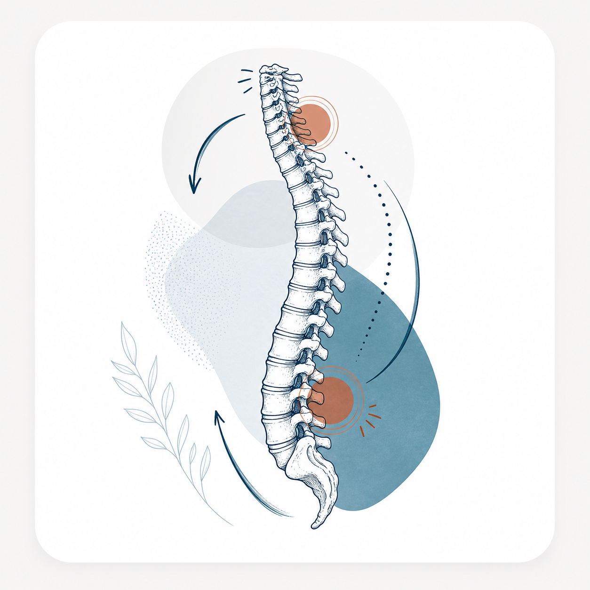
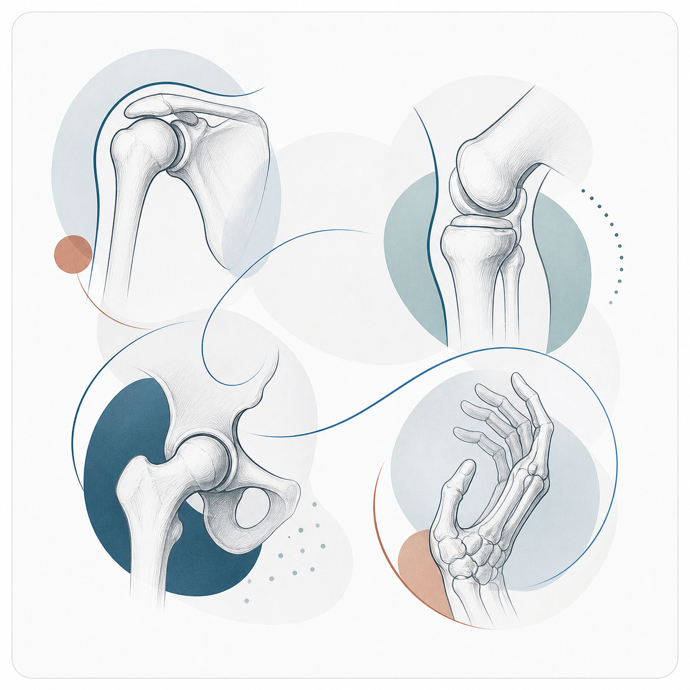
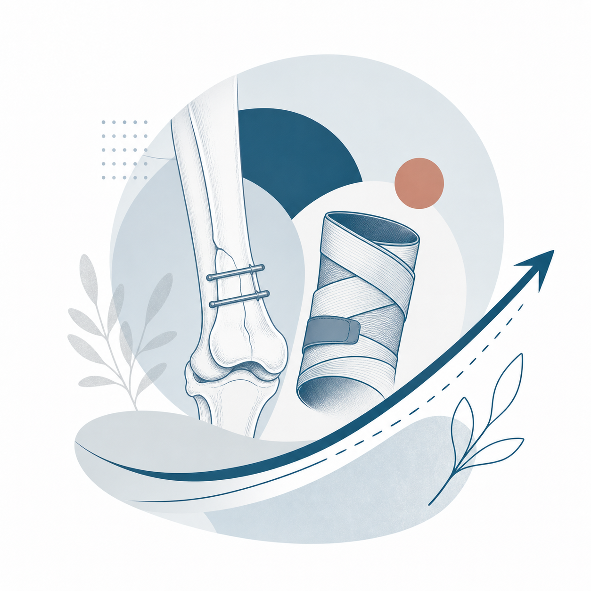
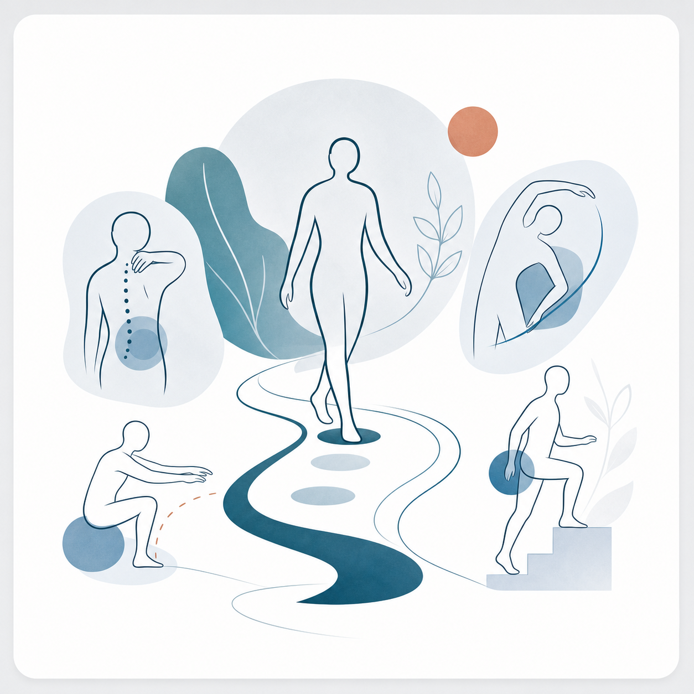

Formazione
- Laurea in Medicina e Chirurgia, [Università].
- Specializzazione in Medicina Fisica e Riabilitativa, [Istituto].
- Aggiornamento continuo su dolore, postura e recupero motorio.
Il fisiatra è il medico della riabilitazione: valuta dolore, movimento e autonomia, collega diagnosi e percorso terapeutico, e coordina le cure quando servono fisioterapia, infiltrazioni o controlli specialistici.
Sceglierlo significa avere una lettura medica del problema, un piano realistico e indicazioni chiare su cosa fare prima, durante e dopo la riabilitazione.
Una visita fisiatrica è utile quando il dolore limita gesti quotidiani, sport, lavoro o recupero dopo un intervento. L'obiettivo non è solo ridurre il sintomo, ma capire perché compare e come tornare a muoversi con sicurezza.
Medico specialista in Medicina Fisica e Riabilitativa. Mi occupo di dolore muscoloscheletrico, recupero funzionale e percorsi riabilitativi personalizzati.
Alcuni problemi arrivano da un trauma, altri da carichi ripetuti, postura, artrosi o recuperi incompleti. La visita serve a distinguere cosa richiede terapia, esercizio, approfondimenti o semplicemente un piano più ordinato.

Lombalgia, sciatalgia, cervicalgia, rigidità e dolore persistente dopo episodi acuti.

Tendinopatie, artrosi, borsiti, limitazioni articolari e recupero dopo interventi.

Percorsi dopo fratture, distorsioni, protesi, immobilizzazioni o periodi di inattività.

Perdita di forza, equilibrio, autonomia o sicurezza nei gesti quotidiani.
Anamnesi, esame obiettivo, valutazione del movimento e indicazioni pratiche per il percorso successivo.
Obiettivi chiari, priorità terapeutiche e coordinamento con fisioterapista o altri professionisti.
Quando indicate, possono aiutare a controllare dolore e infiammazione in modo mirato.
Verifica dei progressi, adattamento del programma e indicazioni per mantenere i risultati.
Per prenotare una visita in studio usa telefono o email. I segnaposto sono pronti per essere sostituiti con indirizzo, orari e canali ufficiali.
Al momento la prenotazione passa dai contatti dello studio. Per una visita online, invece, puoi usare il profilo MioDottore del medico.